AMOC Publication Figures
This notebook demonstrates how to create publication-quality AMOC figures using the AMOCatlas package with PyGMT. It reproduces plots similar to those in Frajka-Williams et al. (2019, 2023) and other AMOC publications.
Features:
Clean, simplified workflow using amocatlas module functions
Publication-quality PyGMT plots
Multi-array time series comparison
Tukey filtering for low-frequency analysis
Component breakdown plots (e.g., RAPID, OSNAP)
Figures are designed to be re-used: the “AMOCatlas” badge and timestamp can be cropped out.
Suggested citation:
For the multi-panel figure, you can say “updated from Frajka-Williams et al. 2019”.
[1]:
import os
# AMOCatlas imports
from amocatlas import read, tools, plotters
# Set GMT library path if needed (adjust for your system)
# os.environ["GMT_LIBRARY_PATH"] = "/opt/homebrew/lib" # macOS Homebrew
# os.environ["GMT_LIBRARY_PATH"] = "/usr/lib" # Linux
# Create figures directory for documentation
figures_dir = "../docs/source/_static/paperfigs"
os.makedirs(figures_dir, exist_ok=True)
print(f"✓ Figures will be saved to: {figures_dir}/")
✓ Figures will be saved to: ../docs/source/_static/paperfigs/
1. Load and Standardize Data
Load MOC data from all major observing arrays and convert to standardized format.
[2]:
# Load datasets
print("Loading AMOC array datasets...")
# RAPID 26°N
rapid_std = read.rapid(all_files=True)
# MOVE 16°N
move_std = read.move()
# OSNAP Subpolar
osnap_std = read.osnap(transport_only=True)
# SAMBA 34.5°S
samba_std = read.samba(all_files=True)
print("✓ All datasets loaded and standardized")
rapid_mht = rapid_std[4]
Loading AMOC array datasets...
Loading 5 RAPID 26°N dataset(s):
0. moc_transports.nc: RAPID layer transport time series
1. moc_vertical.nc: RAPID vertical streamfunction time series
2. ts_gridded.nc: RAPID gridded temperature and salinity
3. 2d_gridded.nc: RAPID 2D gridded data
4. meridional_transports.nc: RAPID meridional transport data
Loading 1 MOVE 16°N dataset(s):
0. OS_MOVE_20000206-20221014_DPR_VOLUMETRANSPORT.nc: MOVE transport time series
Loading 1 OSNAP dataset(s):
0. OSNAP_MOC_MHT_MFT_TimeSeries_201408_202207_2025.nc: Time series of MOC, MHT, and MFT (2014-2022)
Loading 2 SAMBA 34.5°S dataset(s):
0. Upper_Abyssal_Transport_Anomalies.txt: Daily volume transport anomaly estimates for the upper and abyssal cells of the MOC
1. MOC_TotalAnomaly_and_constituents.asc: Daily travel time values, calibrated to a nominal pressure of 1000 dbar, and bottom pressures from the two PIES/CPIES moorings
---------------------------------------------------------------------------
KeyboardInterrupt Traceback (most recent call last)
Cell In[2], line 14
11 osnap_std = read.osnap(transport_only=True)
13 # SAMBA 34.5°S
---> 14 samba_std = read.samba(all_files=True)
16 print("✓ All datasets loaded and standardized")
18 rapid_mht = rapid_std[4]
File ~/Cloudfree/github/AMOCatlas/amocatlas/read.py:270, in _create_array_function.<locals>.array_function(source, file_list, transport_only, all_files, raw, data_dir, redownload, version, track_added_attrs)
267 kwargs["version"] = version
269 # Load raw datasets
--> 270 reader_result = reader_func(**kwargs)
272 # Handle the case where track_added_attrs=True returns a tuple
273 if track_added_attrs:
File ~/Cloudfree/github/AMOCatlas/amocatlas/utilities.py:118, in apply_defaults.<locals>.decorator.<locals>.wrapper(source, file_list, *args, **kwargs)
116 if file_list is None:
117 file_list = default_files
--> 118 return func(source, file_list, *args, **kwargs)
File ~/Cloudfree/github/AMOCatlas/amocatlas/data_sources/samba34s.py:135, in read_samba(source, file_list, transport_only, data_dir, redownload, track_added_attrs)
132 log_error("No download URL defined for SAMBA file: %s", file)
133 raise FileNotFoundError(f"No download URL defined for SAMBA file {file}")
--> 135 file_path = utilities.resolve_file_path(
136 file_name=file,
137 source=source,
138 download_url=download_url,
139 local_data_dir=local_data_dir,
140 redownload=redownload,
141 )
143 # Parse ASCII file
144 try:
File ~/Cloudfree/github/AMOCatlas/amocatlas/utilities.py:192, in resolve_file_path(file_name, source, download_url, local_data_dir, redownload)
190 try:
191 log.info("Downloading file from %s to %s", download_url, local_data_dir)
--> 192 return download_file(
193 download_url, local_data_dir, redownload=redownload, filename=file_name
194 )
195 except (OSError, IOError, ConnectionError, TimeoutError) as e:
196 log.exception("Failed to download %s", download_url)
File ~/Cloudfree/github/AMOCatlas/amocatlas/utilities.py:498, in download_file(url, dest_folder, redownload, filename)
494 f.write(chunk)
496 elif parsed_url.scheme == "ftp":
497 # FTP download
--> 498 with FTP(parsed_url.netloc) as ftp:
499 ftp.login() # anonymous login
500 with open(local_filename, "wb") as f:
File ~/.pyenv/versions/3.11.7/lib/python3.11/ftplib.py:121, in FTP.__init__(self, host, user, passwd, acct, timeout, source_address, encoding)
119 self.timeout = timeout
120 if host:
--> 121 self.connect(host)
122 if user:
123 self.login(user, passwd, acct)
File ~/.pyenv/versions/3.11.7/lib/python3.11/ftplib.py:158, in FTP.connect(self, host, port, timeout, source_address)
156 self.source_address = source_address
157 sys.audit("ftplib.connect", self, self.host, self.port)
--> 158 self.sock = socket.create_connection((self.host, self.port), self.timeout,
159 source_address=self.source_address)
160 self.af = self.sock.family
161 self.file = self.sock.makefile('r', encoding=self.encoding)
File ~/.pyenv/versions/3.11.7/lib/python3.11/socket.py:836, in create_connection(address, timeout, source_address, all_errors)
834 if source_address:
835 sock.bind(source_address)
--> 836 sock.connect(sa)
837 # Break explicitly a reference cycle
838 exceptions.clear()
KeyboardInterrupt:
[3]:
# RAPID 26°N
rapid_std = read.rapid(all_files=True)
ts_gridded = rapid_std[2]
ts_gridded
Loading 5 RAPID 26°N dataset(s):
0. moc_transports.nc: RAPID layer transport time series
1. moc_vertical.nc: RAPID vertical streamfunction time series
2. ts_gridded.nc: RAPID gridded temperature and salinity
3. 2d_gridded.nc: RAPID 2D gridded data
4. meridional_transports.nc: RAPID meridional transport data
[3]:
<xarray.Dataset> Size: 509MB
Dimensions: (depth: 242, TIME: 14599)
Coordinates:
* TIME (TIME) datetime64[ns] 117kB 2004-04-02 ... 2024-03-27
PRESSURE (depth) float64 2kB ...
Dimensions without coordinates: depth
Data variables: (12/18)
TEMP_WEST (depth, TIME) float64 28MB ...
PSAL_WEST (depth, TIME) float64 28MB ...
TEMP_WB3 (depth, TIME) float64 28MB ...
PSAL_WB3 (depth, TIME) float64 28MB ...
TEMP_EAST (depth, TIME) float64 28MB ...
PSAL_EAST (depth, TIME) float64 28MB ...
... ...
TEMP_EAST_FLAG (depth, TIME) float64 28MB ...
PSAL_EAST_FLAG (depth, TIME) float64 28MB ...
TEMP_MARWEST_FLAG (depth, TIME) float64 28MB ...
PSAL_MARWEST_FLAG (depth, TIME) float64 28MB ...
TEMP_MAREAST_FLAG (depth, TIME) float64 28MB ...
PSAL_MAREAST_FLAG (depth, TIME) float64 28MB ...
Attributes: (12/40)
title: RAPID streamfunction
summary: RAPID 26N transport estimates dataset
description: RAPID 26N transport estimates dataset
program: RAPID
project: RAPID-AMOC 26°N array
license: UK Open Government Licence v3.0 ht...
... ...
variable_mapping: {'time': 'TIME', 'TG_west': 'TEMP_...
original_variable_metadata: {'TG_west': {'long_name': 'Tempera...
applied_variable_mapping: {'time': 'TIME', 'TG_west': 'TEMP_...
version: v2024.1a
files: {'moc_transports.nc': {'featureTyp...
convert_to_coord: pressure[37]:
import gsw
import numpy as np
import matplotlib.pyplot as plt
# ---- Density calculations ----
DENS_WEST = gsw.rho(ts_gridded["TEMP_WEST"], ts_gridded["PSAL_WEST"], 0)
DENS_EAST = gsw.rho(ts_gridded["TEMP_EAST"], ts_gridded["PSAL_EAST"], 0)
DENS_ANOMALY = DENS_EAST - DENS_WEST # (depth, time)
# ---- Resample to monthly means first ----
DENS_WEST_monthly = DENS_WEST.resample(TIME="1ME").mean()
DENS_EAST_monthly = DENS_EAST.resample(TIME="1ME").mean()
# ---- Remove seasonal cycle via groupby ----
# ---- Remove seasonal cycle via groupby ----
DENS_WEST_ds = (
DENS_WEST_monthly.groupby("TIME.month")
- DENS_WEST_monthly.groupby("TIME.month").mean()
)
DENS_EAST_ds = (
DENS_EAST_monthly.groupby("TIME.month")
- DENS_EAST_monthly.groupby("TIME.month").mean()
)
DENS_ANOMALY_ds = DENS_EAST_ds - DENS_WEST_ds
# Check
print(DENS_WEST_ds.shape) # should be (242, n_months_total)
# ---- Recompute std along time dimension ----
dens_west_std = DENS_WEST_ds.std(dim="TIME", ddof=0).values
dens_east_std = DENS_EAST_ds.std(dim="TIME", ddof=0).values
dens_diff_std = DENS_ANOMALY_ds.std(dim="TIME", ddof=0).values
# ---- Plot ----
fig, axes = plt.subplots(1, 3, figsize=(12, 7), sharey=True)
ax = axes[0]
ax.plot(dens_west_std, depths, "b-", lw=2)
ax.set_xlabel(r"$\sigma(\rho_w)$ (kg m$^{-3}$)")
ax.set_ylabel("Pressure (dbar)")
ax.set_title("Western boundary\ndensity variability")
ax.grid(True, alpha=0.3)
ax = axes[1]
ax.plot(dens_east_std, depths, "r-", lw=2)
ax.set_xlabel(r"$\sigma(\rho_e)$ (kg m$^{-3}$)")
ax.set_title("Eastern boundary\ndensity variability")
ax.grid(True, alpha=0.3)
ax = axes[2]
ax.plot(dens_diff_std, depths, "k-", lw=2, label=r"$\sigma(\rho_e - \rho_w)$")
ax.plot(dens_east_std, depths, "r-", lw=1, alpha=0.4, label=r"$\sigma(\rho_e)$")
ax.plot(dens_west_std, depths, "b-", lw=1, alpha=0.4, label=r"$\sigma(\rho_w)$")
ax.set_xlabel(r"$\sigma$ (kg m$^{-3}$)")
ax.set_title("East-west density\ndifference variability")
ax.legend(fontsize=9)
ax.grid(True, alpha=0.3)
for ax in axes:
ax.invert_yaxis()
ax.axhline(z_moc, color="k", ls="--", alpha=0.5, label="1100 dbar")
plt.suptitle("Boundary density variability", y=1.01)
plt.tight_layout()
plt.show()
dens_west_std = DENS_WEST_ds.std(dim="TIME").values # (242,)
dens_east_std = DENS_EAST_ds.std(dim="TIME").values
dens_diff_std = DENS_ANOMALY_ds.std(dim="TIME").values
depths = ts_gridded["PRESSURE"].values # (242,)
print(dens_west_std.shape) # should be (242,)
print(depths.shape) # should be (242,)
(242, 240)
/Users/eddifying/Cloudfree/github/AMOCatlas/venv/lib/python3.11/site-packages/numpy/lib/_nanfunctions_impl.py:2015: RuntimeWarning: Degrees of freedom <= 0 for slice.
var = nanvar(a, axis=axis, dtype=dtype, out=out, ddof=ddof,
/Users/eddifying/Cloudfree/github/AMOCatlas/venv/lib/python3.11/site-packages/numpy/lib/_nanfunctions_impl.py:2015: RuntimeWarning: Degrees of freedom <= 0 for slice.
var = nanvar(a, axis=axis, dtype=dtype, out=out, ddof=ddof,
/Users/eddifying/Cloudfree/github/AMOCatlas/venv/lib/python3.11/site-packages/numpy/lib/_nanfunctions_impl.py:2015: RuntimeWarning: Degrees of freedom <= 0 for slice.
var = nanvar(a, axis=axis, dtype=dtype, out=out, ddof=ddof,
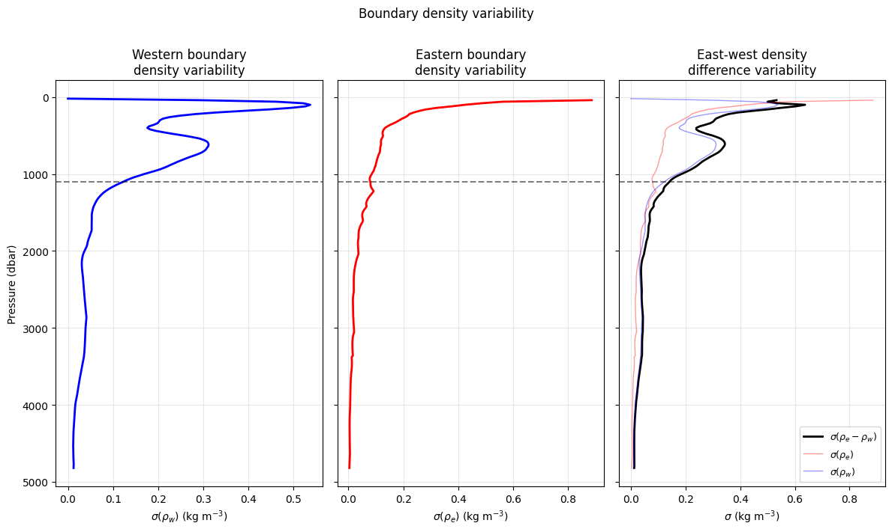
(242,)
(242,)
/Users/eddifying/Cloudfree/github/AMOCatlas/venv/lib/python3.11/site-packages/numpy/lib/_nanfunctions_impl.py:2015: RuntimeWarning: Degrees of freedom <= 0 for slice.
var = nanvar(a, axis=axis, dtype=dtype, out=out, ddof=ddof,
/Users/eddifying/Cloudfree/github/AMOCatlas/venv/lib/python3.11/site-packages/numpy/lib/_nanfunctions_impl.py:2015: RuntimeWarning: Degrees of freedom <= 0 for slice.
var = nanvar(a, axis=axis, dtype=dtype, out=out, ddof=ddof,
/Users/eddifying/Cloudfree/github/AMOCatlas/venv/lib/python3.11/site-packages/numpy/lib/_nanfunctions_impl.py:2015: RuntimeWarning: Degrees of freedom <= 0 for slice.
var = nanvar(a, axis=axis, dtype=dtype, out=out, ddof=ddof,
[31]:
import matplotlib.pyplot as plt
# ---- Constants ----
g = 9.81
rho_0 = 1027.0
f = 9.3e-5 # Coriolis at 26N
sverdrup = 1e6
z_moc = 1100.0 # depth of max overturning in dbar
# ---- Ensure numpy arrays ----
depths = np.array(ts_gridded["PRESSURE"]) # (depth,)
dens_anomaly_np = np.array(DENS_WEST - DENS_EAST) # (depth, time)
dens_anomaly_std = np.std(dens_anomaly_np, axis=1) # (depth,)
# ---- Depth spacing (dbar, ~= m) ----
dz = np.abs(np.gradient(depths))
# ---- Masks ----
z_bot = depths.max()
upper_mask = depths <= z_moc
lower_mask = depths >= z_moc
upper_idx = np.where(upper_mask)[0]
lower_idx = np.where(lower_mask)[0]
# ---- Unnormalised weights (for MOC calculation) ----
upper_weights = np.where(upper_mask, depths, np.nan) # 0 at surface, 1100 at z_moc
lower_weights = np.where(
lower_mask, z_bot - depths, np.nan
) # z_bot-z_moc at z_moc, 0 at bottom
# ---- Normalised weights (for plotting panel 1) ----
upper_weights_norm = np.where(upper_mask, depths / z_moc, np.nan)
lower_weights_norm = np.where(lower_mask, (z_bot - depths) / (z_bot - z_moc), np.nan)
# ---- Weighted density std (panel 2) ----
weighted_upper = np.where(upper_mask, dens_anomaly_std * upper_weights, np.nan)
weighted_lower = np.where(lower_mask, dens_anomaly_std * lower_weights, np.nan)
# ---- Cumulative integrals outward from z_moc (units: kg/m * dbar^2) ----
cumul_upper = np.full(len(depths), np.nan)
cumul_lower = np.full(len(depths), np.nan)
# Upper: accumulate from z_moc toward surface
cumul_upper[upper_idx] = np.cumsum((weighted_upper[upper_idx] * dz[upper_idx])[::-1])[
::-1
]
# Lower: accumulate from z_moc toward bottom
cumul_lower[lower_idx] = np.cumsum(weighted_lower[lower_idx] * dz[lower_idx])
# ---- Prefactor: g/(rho_0*f), dbar->m conversion (1 dbar = 1 m), /1e6 for Sv ----
# weights and dz are both in dbar ~ m, so units are kg/m^3 * m * m = kg/m
# then g/(rho_0*f) has units m^4/(kg s^-1) -> m^3/s -> /1e6 for Sv
prefactor = (g / (rho_0 * f)) / sverdrup
# ---- Sanity checks ----
print(f"g/(rho_0*f) = {g / (rho_0 * f):.2f} m^4 kg^-1 s")
print(f"Typical density anomaly std: {np.nanmean(np.abs(dens_anomaly_std)):.4f} kg/m^3")
print(f"Max upper cumulative: {np.nanmax(cumul_upper):.0f} kg m^-1 dbar")
print(f"Upper limb MOC estimate: {prefactor * np.nanmax(cumul_upper):.1f} Sv")
print(f"Lower limb MOC estimate: {prefactor * np.nanmax(cumul_lower):.1f} Sv")
# ---- Plot ----
fig, axes = plt.subplots(1, 3, figsize=(14, 8), sharey=True)
ax = axes[0]
ax.plot(upper_weights_norm, depths, "r-", lw=2, label=r"Upper limb: $z\, /\, 1100$")
ax.plot(
lower_weights_norm,
depths,
"b-",
lw=2,
label=r"Lower limb: $(z_{bot} - z)\, /\, (z_{bot} - 1100)$",
)
ax.axhline(z_moc, color="k", ls="--", alpha=0.6, label="MOC max (1100 dbar)")
ax.set_xlabel("Normalised weight")
ax.set_ylabel("Pressure (dbar)")
ax.set_title("Weighting functions")
ax.legend(fontsize=9)
ax.grid(True, alpha=0.3)
ax = axes[1]
ax.plot(weighted_upper, depths, "r-", lw=2, label="Upper limb")
ax.plot(weighted_lower, depths, "b-", lw=2, label="Lower limb")
ax.axhline(z_moc, color="k", ls="--", alpha=0.6)
ax.axvline(0, color="k", lw=0.5)
ax.set_xlabel(r"$\sigma(\rho_w - \rho_e) \times$ weight (kg m$^{-2}$)")
ax.set_title("Density variability $\\times$ weight\n(MOC sensitivity)")
ax.legend(fontsize=9)
ax.grid(True, alpha=0.3)
ax = axes[2]
ax.plot(cumul_upper * prefactor, depths, "r-", lw=2, label="Upper limb")
ax.plot(cumul_lower * prefactor, depths, "b-", lw=2, label="Lower limb")
ax.axhline(z_moc, color="k", ls="--", alpha=0.6)
ax.axvline(0, color="k", lw=0.5)
ax.set_xlabel("Cumulative MOC contribution (Sv)")
ax.set_title("Cumulative MOC contribution\n(from 1100 dbar outward)")
ax.legend(fontsize=9)
ax.grid(True, alpha=0.3)
for ax in axes:
ax.invert_yaxis()
plt.suptitle("MOC sensitivity to east-west density contrast", y=1.01)
plt.tight_layout()
plt.show()
# The compensation needed to make lower limb = upper limb
delta_psi = (prefactor * np.nanmax(cumul_lower)) - (prefactor * np.nanmax(cumul_upper))
print(f"Uncorrected lower limb: {prefactor * np.nanmax(cumul_lower):.1f} Sv")
print(f"Uncorrected upper limb: {prefactor * np.nanmax(cumul_upper):.1f} Sv")
print(f"Barotropic compensation needed: {delta_psi:.1f} Sv")
# This should be ~45 Sv, carried by v_ref
g/(rho_0*f) = 102.71 m^4 kg^-1 s
Typical density anomaly std: 0.1266 kg/m^3
Max upper cumulative: 205432 kg m^-1 dbar
Upper limb MOC estimate: 21.1 Sv
Lower limb MOC estimate: 63.1 Sv
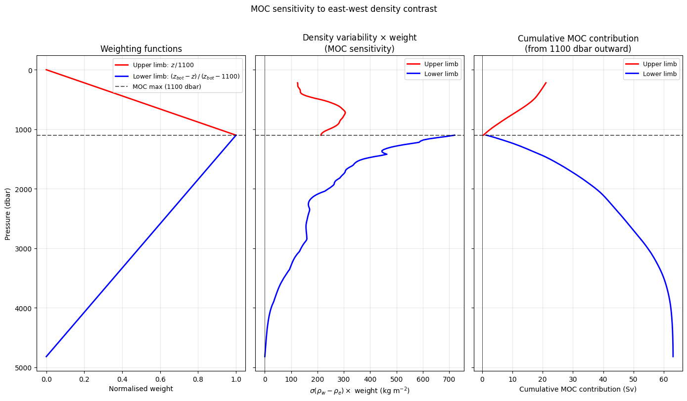
Uncorrected lower limb: 63.1 Sv
Uncorrected upper limb: 21.1 Sv
Barotropic compensation needed: 42.0 Sv
[43]:
# ---- 5-year block means ----
DENS_WEST_5yr = DENS_WEST_ds.resample(TIME="5YE").mean() # (242, 4)
DENS_EAST_5yr = DENS_EAST_ds.resample(TIME="5YE").mean() # (242, 4)
DENS_ANOMALY_5yr = DENS_EAST_5yr - DENS_WEST_5yr # (242, 4)
# ---- Std across the 4 five-year blocks ----
dens_west_5yr_std = DENS_WEST_5yr.std(dim="TIME").values # (242,)
dens_east_5yr_std = DENS_EAST_5yr.std(dim="TIME").values # (242,)
dens_diff_5yr_std = DENS_ANOMALY_5yr.std(dim="TIME").values # (242,)
fig, ax = plt.subplots(1, 1, figsize=(6, 8))
ax.plot(dens_west_5yr_std, depths, "b-", lw=2, label=r"$\sigma(\rho_w)$")
ax.plot(dens_east_5yr_std, depths, "r-", lw=2, label=r"$\sigma(\rho_e)$")
ax.plot(dens_diff_5yr_std, depths, "k-", lw=2, label=r"$\sigma(\rho_e - \rho_w)$")
ax.axhline(z_moc, color="k", ls="--", alpha=0.5, label="1100 dbar")
ax.axvline(0, color="k", lw=0.5)
ax.set_xlabel(r"$\sigma$ across 5-year blocks (kg m$^{-3}$)")
ax.set_ylabel("Pressure (dbar)")
ax.set_title("Low-frequency density variability\n(std of four 5-year block means)")
ax.legend(fontsize=10)
ax.invert_yaxis()
ax.grid(True, alpha=0.3)
plt.tight_layout()
plt.show()
# ---- Extract numpy arrays ----
dens_west_5yr_std_np = dens_west_5yr_std
dens_east_5yr_std_np = dens_east_5yr_std
dens_diff_5yr_std_np = dens_diff_5yr_std
# ---- Weighted contributions (unnormalised weights) ----
weighted_upper_5yr = np.where(upper_mask, dens_diff_5yr_std_np * upper_weights, np.nan)
weighted_lower_5yr = np.where(lower_mask, dens_diff_5yr_std_np * lower_weights, np.nan)
# ---- Cumulative integrals outward from z_moc ----
cumul_upper_5yr = np.full(len(depths), np.nan)
cumul_lower_5yr = np.full(len(depths), np.nan)
cumul_upper_5yr[upper_idx] = np.cumsum(
(weighted_upper_5yr[upper_idx] * dz[upper_idx])[::-1]
)[::-1]
cumul_lower_5yr[lower_idx] = np.cumsum(weighted_lower_5yr[lower_idx] * dz[lower_idx])
fig, axes = plt.subplots(1, 3, figsize=(14, 7), sharey=True)
ax = axes[0]
ax.plot(dens_west_5yr_std_np, depths, "b-", lw=2, label=r"$\sigma(\rho_w)$")
ax.plot(dens_east_5yr_std_np, depths, "r-", lw=2, label=r"$\sigma(\rho_e)$")
ax.plot(dens_diff_5yr_std_np, depths, "k-", lw=2, label=r"$\sigma(\rho_e - \rho_w)$")
ax.axhline(z_moc, color="k", ls="--", alpha=0.5)
ax.set_xlabel(r"$\sigma$ (kg m$^{-3}$)")
ax.set_ylabel("Pressure (dbar)")
ax.set_title("Low-frequency\ndensity variability")
ax.legend(fontsize=9)
ax.grid(True, alpha=0.3)
# ---- Weighted contributions split by east and west ----
weighted_upper_west = np.where(upper_mask, dens_west_5yr_std_np * upper_weights, np.nan)
weighted_upper_east = np.where(upper_mask, dens_east_5yr_std_np * upper_weights, np.nan)
weighted_lower_west = np.where(lower_mask, dens_west_5yr_std_np * lower_weights, np.nan)
weighted_lower_east = np.where(lower_mask, dens_east_5yr_std_np * lower_weights, np.nan)
ax = axes[1]
ax.plot(weighted_upper_5yr, depths, "k-", lw=2, label="Upper limb difference")
ax.plot(
weighted_lower_5yr, depths, "-", lw=2, color="grey", label="Lower limb difference"
)
ax.plot(weighted_upper_west, depths, "b-", lw=1.5, ls="--", label="Upper limb west")
ax.plot(weighted_upper_east, depths, "r-", lw=1.5, ls="--", label="Upper limb east")
ax.plot(weighted_lower_west, depths, "b-", lw=1.5, ls=":", label="Lower limb west")
ax.plot(weighted_lower_east, depths, "r-", lw=1.5, ls=":", label="Lower limb east")
ax.axhline(z_moc, color="k", ls="--", alpha=0.5)
ax.axvline(0, color="k", lw=0.5)
ax.set_xlabel(r"$\sigma(\rho) \times$ weight (kg m$^{-2}$)")
ax.set_title("Density variability\n$\\times$ weight")
ax.legend(fontsize=8)
ax.grid(True, alpha=0.3)
# ---- Cumulative integrals split by east and west ----
cumul_upper_west = np.full(len(depths), np.nan)
cumul_upper_east = np.full(len(depths), np.nan)
cumul_lower_west = np.full(len(depths), np.nan)
cumul_lower_east = np.full(len(depths), np.nan)
cumul_upper_west[upper_idx] = np.cumsum(
(weighted_upper_west[upper_idx] * dz[upper_idx])[::-1]
)[::-1]
cumul_upper_east[upper_idx] = np.cumsum(
(weighted_upper_east[upper_idx] * dz[upper_idx])[::-1]
)[::-1]
cumul_lower_west[lower_idx] = np.cumsum(weighted_lower_west[lower_idx] * dz[lower_idx])
cumul_lower_east[lower_idx] = np.cumsum(weighted_lower_east[lower_idx] * dz[lower_idx])
fig, axes = plt.subplots(1, 3, figsize=(14, 7), sharey=True)
# ---- Panel 1: Density variability ----
ax = axes[0]
ax.plot(dens_west_5yr_std_np, depths, "r-", lw=2, label=r"$\sigma(\rho_w)$")
ax.plot(dens_east_5yr_std_np, depths, "b-", lw=2, label=r"$\sigma(\rho_e)$")
ax.plot(dens_diff_5yr_std_np, depths, "k-", lw=2, label=r"$\sigma(\rho_e - \rho_w)$")
ax.axhline(z_moc, color="k", ls="--", alpha=0.5)
ax.set_xlabel(r"$\sigma$ (kg m$^{-3}$)")
ax.set_ylabel("Pressure (dbar)")
ax.set_title("Low-frequency\ndensity variability")
ax.legend(fontsize=9)
ax.grid(True, alpha=0.3)
# ---- Panel 2: Weighted density variability ----
ax = axes[1]
ax.plot(weighted_upper_5yr, depths, "k-", lw=2, label="Upper limb difference")
ax.plot(
weighted_lower_5yr, depths, "-", lw=2, color="grey", label="Lower limb difference"
)
ax.plot(weighted_upper_west, depths, "r--", lw=1.5, label="Upper limb west")
ax.plot(weighted_upper_east, depths, "b--", lw=1.5, label="Upper limb east")
ax.plot(weighted_lower_west, depths, "r:", lw=1.5, label="Lower limb west")
ax.plot(weighted_lower_east, depths, "b:", lw=1.5, label="Lower limb east")
ax.axhline(z_moc, color="k", ls="--", alpha=0.5)
ax.axvline(0, color="k", lw=0.5)
ax.set_xlabel(r"$\sigma(\rho) \times$ weight (kg m$^{-2}$)")
ax.set_title("Density variability\n$\\times$ weight")
ax.legend(fontsize=8)
ax.grid(True, alpha=0.3)
# ---- Panel 3: Cumulative MOC contribution ----
ax = axes[2]
ax.plot(cumul_upper_5yr * prefactor, depths, "k-", lw=2, label="Upper limb difference")
ax.plot(
cumul_lower_5yr * prefactor,
depths,
"-",
lw=2,
color="grey",
label="Lower limb difference",
)
ax.plot(cumul_upper_west * prefactor, depths, "r--", lw=1.5, label="Upper limb west")
ax.plot(cumul_upper_east * prefactor, depths, "b--", lw=1.5, label="Upper limb east")
ax.plot(cumul_lower_west * prefactor, depths, "r:", lw=1.5, label="Lower limb west")
ax.plot(cumul_lower_east * prefactor, depths, "b:", lw=1.5, label="Lower limb east")
ax.axhline(z_moc, color="k", ls="--", alpha=0.5)
ax.axvline(0, color="k", lw=0.5)
ax.set_xlabel("Cumulative MOC contribution (Sv)")
ax.set_title("Implied low-frequency\nMOC variability")
ax.legend(fontsize=8)
ax.grid(True, alpha=0.3)
for ax in axes:
ax.invert_yaxis()
plt.suptitle("Low-frequency MOC sensitivity (5-year block std)", y=1.01)
plt.tight_layout()
plt.show()
/Users/eddifying/Cloudfree/github/AMOCatlas/venv/lib/python3.11/site-packages/numpy/lib/_nanfunctions_impl.py:2015: RuntimeWarning: Degrees of freedom <= 0 for slice.
var = nanvar(a, axis=axis, dtype=dtype, out=out, ddof=ddof,
/Users/eddifying/Cloudfree/github/AMOCatlas/venv/lib/python3.11/site-packages/numpy/lib/_nanfunctions_impl.py:2015: RuntimeWarning: Degrees of freedom <= 0 for slice.
var = nanvar(a, axis=axis, dtype=dtype, out=out, ddof=ddof,
/Users/eddifying/Cloudfree/github/AMOCatlas/venv/lib/python3.11/site-packages/numpy/lib/_nanfunctions_impl.py:2015: RuntimeWarning: Degrees of freedom <= 0 for slice.
var = nanvar(a, axis=axis, dtype=dtype, out=out, ddof=ddof,
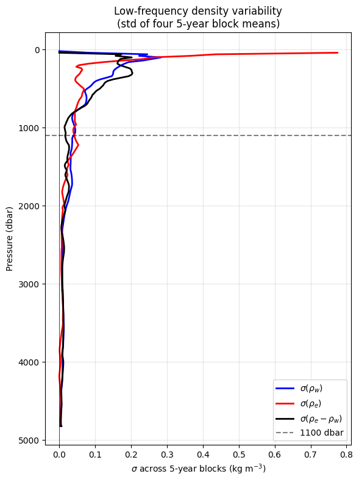
/var/folders/t1/z5bp59k95119nw35yqv699t40000gn/T/ipykernel_14140/73591957.py:71: UserWarning: linestyle is redundantly defined by the 'linestyle' keyword argument and the fmt string "b-" (-> linestyle='-'). The keyword argument will take precedence.
ax.plot(weighted_upper_west, depths, 'b-', lw=1.5, ls='--', label='Upper limb west')
/var/folders/t1/z5bp59k95119nw35yqv699t40000gn/T/ipykernel_14140/73591957.py:72: UserWarning: linestyle is redundantly defined by the 'linestyle' keyword argument and the fmt string "r-" (-> linestyle='-'). The keyword argument will take precedence.
ax.plot(weighted_upper_east, depths, 'r-', lw=1.5, ls='--', label='Upper limb east')
/var/folders/t1/z5bp59k95119nw35yqv699t40000gn/T/ipykernel_14140/73591957.py:73: UserWarning: linestyle is redundantly defined by the 'linestyle' keyword argument and the fmt string "b-" (-> linestyle='-'). The keyword argument will take precedence.
ax.plot(weighted_lower_west, depths, 'b-', lw=1.5, ls=':', label='Lower limb west')
/var/folders/t1/z5bp59k95119nw35yqv699t40000gn/T/ipykernel_14140/73591957.py:74: UserWarning: linestyle is redundantly defined by the 'linestyle' keyword argument and the fmt string "r-" (-> linestyle='-'). The keyword argument will take precedence.
ax.plot(weighted_lower_east, depths, 'r-', lw=1.5, ls=':', label='Lower limb east')
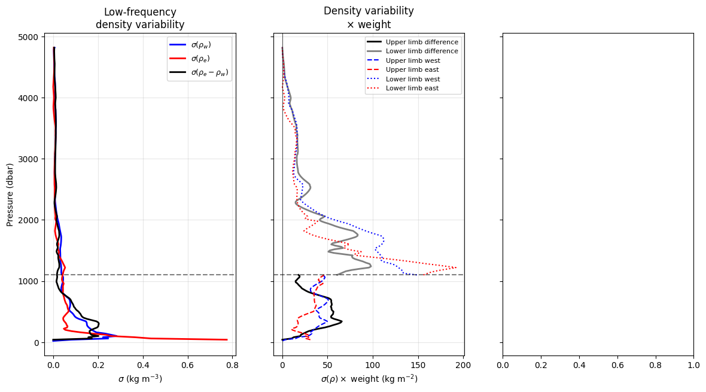
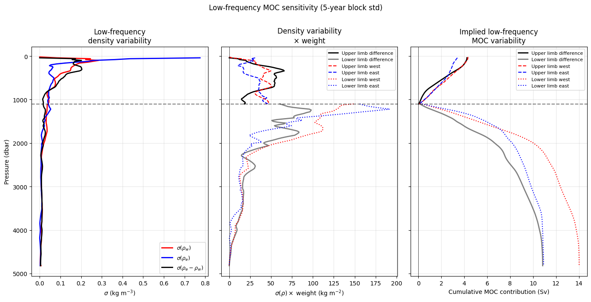
2. Extract Time Series to Pandas DataFrames
Convert xarray datasets to pandas DataFrames for filtering and PyGMT plotting.
[15]:
# Extract time series using new tools functions
rapid_df = tools.extract_time_and_time_num(rapid_std[0])
rapid_df["moc"] = rapid_std[0]["MOC"].values
mht_df = tools.extract_time_and_time_num(rapid_std[4])
mht_df["moc"] = rapid_std[4]["MHT"].values
move_df = tools.extract_time_and_time_num(move_std)
move_df["moc"] = -move_std["MOC"].values # Sign correction
osnap_df = tools.extract_time_and_time_num(osnap_std)
osnap_df["moc"] = osnap_std["MOC_SIGMA0"].values
samba_df = tools.extract_time_and_time_num(samba_std[1]) # Use dataset [1] for MOC
samba_df["moc"] = samba_std[1]["MOC"].values
print("Time series extracted:")
print(f" RAPID: {len(rapid_df)} points")
print(f" MOVE: {len(move_df)} points")
print(f" OSNAP: {len(osnap_df)} points")
print(f" SAMBA: {len(samba_df)} points")
---------------------------------------------------------------------------
NameError Traceback (most recent call last)
Cell In[15], line 12
9 osnap_df = tools.extract_time_and_time_num(osnap_std)
10 osnap_df["moc"] = osnap_std["MOC_SIGMA0"].values
---> 12 samba_df = tools.extract_time_and_time_num(samba_std[1]) # Use dataset [1] for MOC
13 samba_df["moc"] = samba_std[1]["MOC"].values
15 print("Time series extracted:")
NameError: name 'samba_std' is not defined
3. Bin Data to Monthly Resolution
Ensure consistent temporal resolution across arrays for comparison.
[ ]:
# Bin to monthly resolution if needed
rapid_binned = tools.check_and_bin(rapid_df)
move_binned = tools.check_and_bin(move_df)
osnap_binned = tools.check_and_bin(osnap_df)
samba_binned = tools.check_and_bin(samba_df)
# Handle SAMBA temporal gaps to prevent plotting artifacts
samba_binned = tools.handle_samba_gaps(samba_binned)
print("✓ Data binned to consistent temporal resolution")
print("✓ SAMBA gaps handled to prevent plotting artifacts")
✓ Data binned to consistent temporal resolution
✓ SAMBA gaps handled to prevent plotting artifacts
Special Handling for SAMBA Data
SAMBA MOC data contains significant temporal gaps (e.g., 2011-2014) that can cause plotting artifacts. PyGMT and other plotting functions connect all valid (non-NaN) data points regardless of temporal gaps, creating spurious lines across missing periods. The tools.handle_samba_gaps() function prevents these artifacts by:
Creating a regular monthly time grid
Preserving NaN values where no original data existed
Only allowing interpolation within continuous data segments
This ensures clean plots without false connections across data gaps.
4. Apply Tukey Filtering
Apply 18-month Tukey filter to highlight low-frequency variability.
[ ]:
# Apply 18-month Tukey filter for low-frequency analysis
filter_params = {"window_months": 6, "samples_per_day": 1 / 30, "alpha": 0.5}
rapid_filtered = tools.apply_tukey_filter(rapid_binned, column="moc", **filter_params)
move_filtered = tools.apply_tukey_filter(move_binned, column="moc", **filter_params)
osnap_filtered = tools.apply_tukey_filter(osnap_binned, column="moc", **filter_params)
samba_filtered = tools.apply_tukey_filter(samba_binned, column="moc", **filter_params)
print("✓ Tukey filtering applied (6-month window)")
✓ Tukey filtering applied (6-month window)
[ ]:
filter_params = {"window_months": 6, "samples_per_day": 2, "alpha": 0.5}
rapid_filt = tools.apply_tukey_filter(rapid_df, column="moc", **filter_params)
fig_rapid = plotters.plot_moc_timeseries_pygmt(rapid_filt, label="MOCz (Sv)")
fig_rapid.show()
mht_df
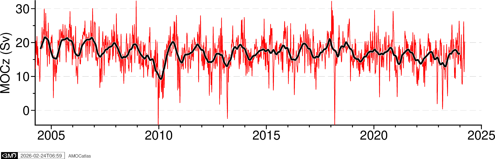
| time | time_num | moc | |
|---|---|---|---|
| 0 | 2004-04-06 | 2004.262295 | 0.650513 |
| 1 | 2004-04-16 | 2004.289617 | 1.470669 |
| 2 | 2004-04-26 | 2004.316940 | 1.276393 |
| 3 | 2004-05-06 | 2004.344262 | 1.287819 |
| 4 | 2004-05-16 | 2004.371585 | 1.267948 |
| ... | ... | ... | ... |
| 725 | 2024-02-11 | 2024.112022 | 0.498629 |
| 726 | 2024-02-21 | 2024.139344 | 1.033724 |
| 727 | 2024-03-02 | 2024.166667 | 1.684482 |
| 728 | 2024-03-12 | 2024.193989 | 1.001111 |
| 729 | 2024-03-22 | 2024.221311 | 1.591885 |
730 rows × 3 columns
[ ]:
filter_params = {"window_months": 6, "samples_per_day": 1 / 10, "alpha": 0.5}
mocha_filt = tools.apply_tukey_filter(mht_df, column="moc", **filter_params)
fig_mocha = plotters.plot_moc_timeseries_pygmt(mocha_filt, label="MHT (PW)")
fig_mocha.show()
mht_mean = mht_df["moc"].mean()
print(f"Mean MHT: {mht_mean:.3f} PW")
mht_mean = rapid_df["moc"].mean()
print(f"Mean MOC: {mht_mean:.3f} Sv")
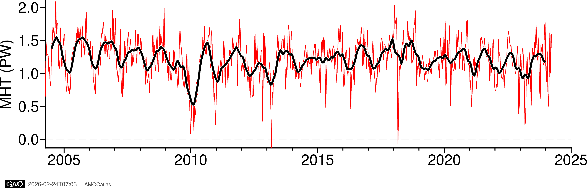
Mean MHT: 1.206 PW
Mean MOC: 16.977 Sv
5. Single Array Time Series Plots
Create individual time series plots for each array.
[ ]:
# Individual time series plots
try:
fig_rapid = plotters.plot_moc_timeseries_pygmt(
rapid_filtered, label="RAPID MOC [Sv]"
)
fig_rapid.show()
fig_move = plotters.plot_moc_timeseries_pygmt(move_filtered, label="MOVE MOC [Sv]")
fig_move.show()
fig_osnap = plotters.plot_moc_timeseries_pygmt(
osnap_filtered, label="OSNAP MOC [Sv]"
)
fig_osnap.show()
fig_samba = plotters.plot_moc_timeseries_pygmt(
samba_filtered, label="SAMBA MOC [Sv]"
)
fig_samba.show()
except ImportError as e:
print(f"PyGMT not available: {e}")
print("Install with: pip install pygmt")
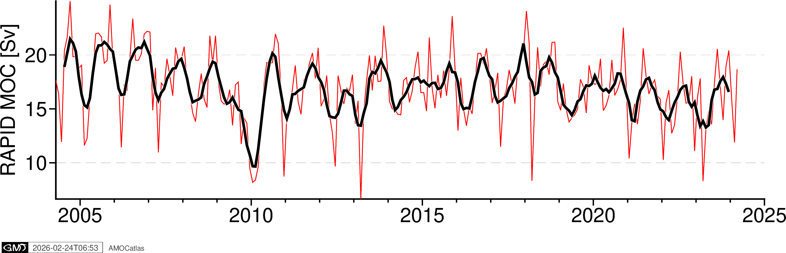
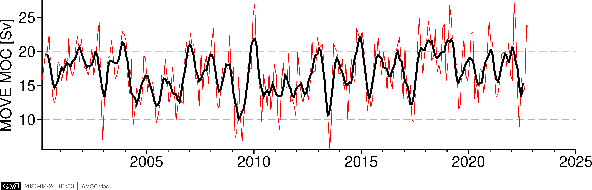
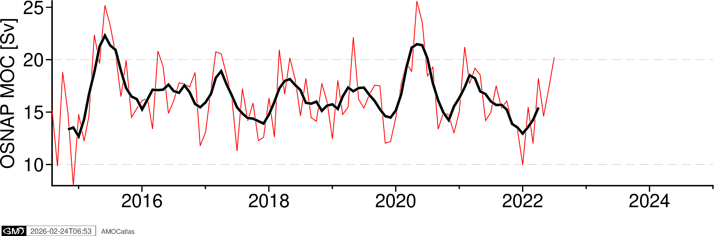
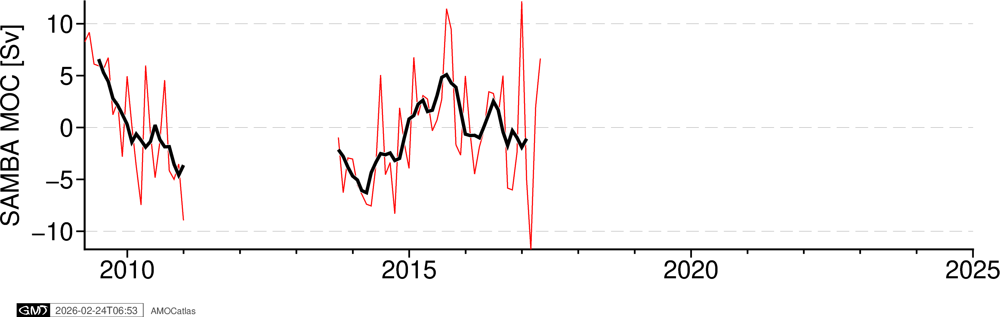
[ ]:
# OSNAP components plot with error bands
try:
# Extract OSNAP component data
ds = osnap_std
osnap_components = tools.extract_time_and_time_num(ds)
# Add all OSNAP variables
for var in [
"MOC_SIGMA0",
"MOC_SIGMA0_ERR",
"MOC_EAST_SIGMA0",
"MOC_EAST_SIGMA0_ERR",
"MOC_WEST_SIGMA0",
"MOC_WEST_SIGMA0_ERR",
]:
osnap_components[var] = ds[var].values
fig_osnap_comp = plotters.plot_osnap_components_pygmt(osnap_components)
fig_osnap_comp.show()
# Optional: save high-resolution version
# fig_path = os.path.join(figures_dir, "osnap_components.png")
# fig_osnap_comp.savefig(fig_path, dpi=300, transparent=True)
# print(f"✓ Saved: {fig_path}")
except ImportError as e:
print(f"PyGMT not available: {e}")
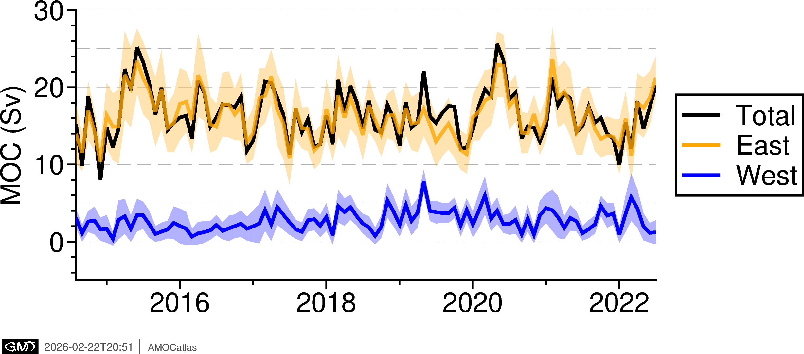
6. RAPID components plot
[ ]:
# RAPID components plot
try:
# Extract RAPID component data
ds = rapid_std[0]
rapid_components = tools.extract_time_and_time_num(ds)
# Add transport components
rapid_components["moc_mar_hc10"] = ds["MOC"].values
rapid_components["t_gs10"] = ds["TRANS_FC"].values # Florida Current
rapid_components["t_ek10"] = ds["TRANS_EKMAN"].values # Ekman
rapid_components["t_umo10"] = ds["TRANS_UMO"].values # Upper Mid-Ocean
fig_rapid_comp = plotters.plot_rapid_components_pygmt(rapid_components)
fig_rapid_comp.show()
except ImportError as e:
print(f"PyGMT not available: {e}")
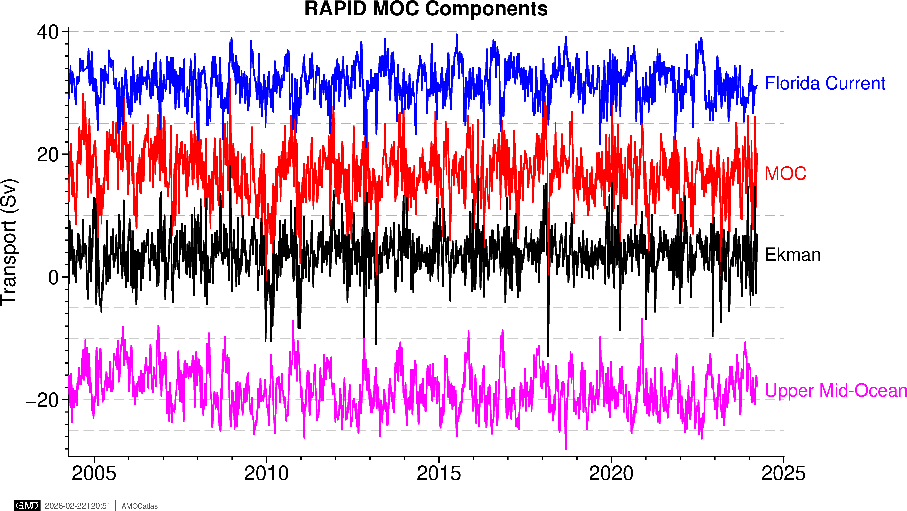
7. Multi-array comparison plot - original data
try: fig_multi = plotters.plot_all_moc_pygmt( osnap_filtered, rapid_filtered, move_filtered, samba_filtered, filtered=False ) fig_multi.show()
# Save high-resolution version
fig_path = os.path.join(figures_dir, "amoc_multi_array.png")
fig_multi.savefig(fig_path, dpi=300, transparent=True)
print(f"✓ Saved: {fig_path}")
except ImportError as e: print(f”PyGMT not available: {e}”)
[ ]:
# Multi-array comparison plot - filtered data
try:
fig_multi_filt = plotters.plot_all_moc_pygmt(
osnap_binned, rapid_binned, move_binned, samba_binned, filtered=False
)
fig_multi_filt.show()
# Save high-resolution version
fig_path = os.path.join(figures_dir, "amoc_multi_array.png")
fig_multi_filt.savefig(fig_path, dpi=300, transparent=True)
print(f"✓ Saved: {fig_path}")
except ImportError as e:
print(f"PyGMT not available: {e}")
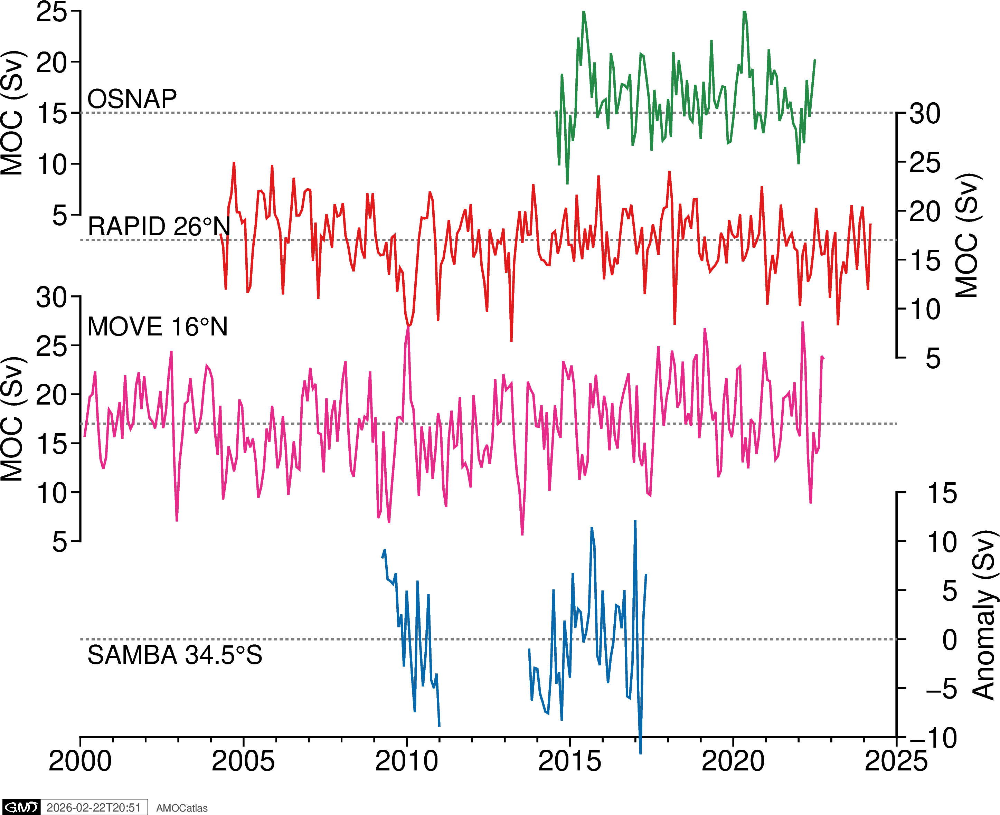
✓ Saved: ../docs/source/_static/paperfigs/amoc_multi_array.png
[ ]:
# Or overlaid, with SAMBA offset because it's an anomaly
fig_overlaid = plotters.plot_all_moc_overlaid_pygmt(
osnap_filtered, rapid_filtered, move_filtered, samba_filtered, filtered=True
)
fig_overlaid.show()
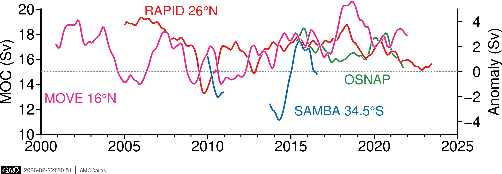
[ ]:
## 8. Historical AMOC estimates from Bryden et al. 2005
[ ]:
try:
fig_bryden = plotters.plot_bryden2005_pygmt()
fig_bryden.show()
# Save high-resolution version
fig_path = os.path.join(figures_dir, "bryden2005_amoc.png")
fig_bryden.savefig(fig_path, dpi=300, transparent=True)
print(f"✓ Saved: {fig_path}")
except ImportError as e:
print(f"PyGMT not available: {e}")
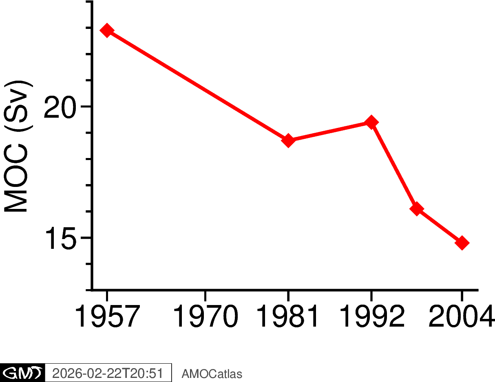
✓ Saved: ../docs/source/_static/paperfigs/bryden2005_amoc.png
9. Summary
This notebook demonstrates the streamlined workflow for creating publication-quality AMOC figures:
Data Loading: Using
read.rapid()for consistent data access and standardisationTime Series Processing: Converting to pandas with
tools.extract_time_and_time_num()Gap Handling: Using
tools.handle_samba_gaps()to prevent plotting artifactsFiltering: Applying Tukey filters with
tools.apply_tukey_filter()Visualization: Creating publication plots with
plotters.plot_*_pygmt()functions
Key Features:
Modular design using AMOCatlas functions
Optional PyGMT dependency with graceful fallback
Consistent styling across all plots
Proper handling of temporal gaps in SAMBA data
Historical context from Bryden et al. (2005)
High-resolution export capability (saved to
docs/source/_static/paperfigs/)